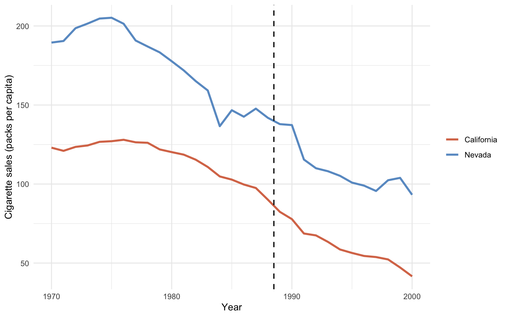

flowchart TB
subgraph "California"
CA_pre["Pre (1984–88) mean<br/>= 99.0"] --> CA_d["Δ California =<br/>72.0 − 99.0 = −27.0"]
CA_post["Post (1989–93) mean<br/>= 72.0"] --> CA_d
end
subgraph "Nevada (control)"
NV_pre["Pre (1984–88) mean<br/>= 143.1"] --> NV_d["Δ Nevada =<br/>121.8 − 143.1 = −21.3"]
NV_post["Post (1989–93) mean<br/>= 121.8"] --> NV_d
end
CA_d --> DD["DiD ATT =<br/>(−27.0) − (−21.3) = −5.7"]
NV_d --> DD
style CA_pre fill:#d97757,stroke:#cbd5e0,color:#fff
style CA_post fill:#d97757,stroke:#cbd5e0,color:#fff
style NV_pre fill:#6a9bcc,stroke:#cbd5e0,color:#fff
style NV_post fill:#6a9bcc,stroke:#cbd5e0,color:#fff
style DD fill:#00d4c8,stroke:#cbd5e0,color:#141413
4 Basic Differences-in-Differences
4.1 The DiD idea
Difference-in-Differences picks one control state — Nevada, for this chapter — and treats its pre-to-post change as the counterfactual change California would have experienced absent the policy. Subtract Nevada’s change from California’s change. Whatever is left over is “what the policy did”.
The identifying assumption is parallel trends: California and Nevada would have moved on parallel paths without the policy. Differences in levels are fine; differences in trends are not. The estimand is a proper Average Treatment effect on the Treated (ATT) for California.
4.2 The change-of-changes identity
The formal DiD identity is
\[\hat{\tau}_{\text{DiD}} = \big(\bar{Y}_{\text{CA, post}} - \bar{Y}_{\text{CA, pre}}\big) - \big(\bar{Y}_{\text{NV, post}} - \bar{Y}_{\text{NV, pre}}\big).\]
The four ingredients of the DiD calculation are easier to see as a 2×2 grid. Each cell holds a group mean; the two within-state changes are the row differences; the DiD estimate is the difference of those differences.
The arithmetic is literally what the regression below computes. In cigsale ~ state * prepost, the interaction coefficient stateCalifornia:prepostPost is the DiD estimate.
4.3 Setup and data
Code
library(tidyverse)
library(sandwich)
library(lmtest)
source("R/table_helpers.R")
set.seed(42)
knitr::opts_chunk$set(dev.args = list(bg = "transparent"))
theme_set(
theme_minimal(base_size = 12) +
theme(
plot.background = element_rect(fill = "transparent", color = NA),
panel.background = element_rect(fill = "transparent", color = NA),
panel.grid.major = element_line(color = "#94a3b8", linewidth = 0.25),
panel.grid.minor = element_line(color = "#94a3b8", linewidth = 0.15),
text = element_text(color = "#94a3b8"),
axis.text = element_text(color = "#94a3b8")
)
)Code
prop99 <- read_rds("data/proposition99.rds") |> as_tibble()
# Keep only California and Nevada in the 1984-1993 window and add the
# Pre/Post factor. Make Nevada the reference level so that the
# stateCalifornia interaction lands on California's extra change.
prop99_did <- prop99 |>
filter(state %in% c("California", "Nevada"),
year > 1983, year < 1994) |>
mutate(prepost = factor(year > 1988, labels = c("Pre", "Post")),
state = factor(state, levels = c("Nevada", "California")))4.4 Fit and HAC inference
Code
# Two-way interacted regression: state main effect + Pre/Post main effect
# + (state x Pre/Post) interaction. The interaction is the DiD estimate.
fit_did <- lm(cigsale ~ state * prepost, data = prop99_did)
# HAC-robust standard errors for the four coefficients.
ms_pretty(list("Two-way interacted OLS, HAC SEs" = fit_did),
vcov = sandwich::vcovHAC,
coef_map = c("(Intercept)" = "Nevada · Pre (baseline)",
"stateCalifornia" = "California main",
"prepostPost" = "Post main",
"stateCalifornia:prepostPost" = "DiD interaction"),
notes = "Standard errors HAC-robust via sandwich::vcovHAC.")| Two-way interacted OLS, HAC SEs | |
|---|---|
| Nevada · Pre (baseline) | 143.100*** |
| (1.092) | |
| California main | -44.120*** |
| (3.880) | |
| Post main | -21.340* |
| (7.687) | |
| DiD interaction | -5.680 |
| (5.393) | |
| Num.Obs. | 20 |
| R2 | 0.914 |
| Std.Errors | Custom |
| + p < 0.1, * p < 0.05, ** p < 0.01, *** p < 0.001 | |
| Standard errors HAC-robust via sandwich::vcovHAC. | |
Reading the output. The interaction coefficient stateCalifornia:prepostPost is roughly \(-5.68\) packs (HAC SE ≈ 5.39, \(p \approx 0.31\)). That is dramatically smaller than the naive \(-27.02\) from chapter 1, and statistically indistinguishable from zero. Why? Because the prepostPost main effect is also large: \(-21.34\) packs. Nevada’s own cigarette sales fell by 21.3 packs between 1984–1988 and 1989–1993. When DiD subtracts that Nevada change from California’s change, almost all of California’s drop is absorbed.
4.5 Visual diagnostic
Code
two_states <- prop99 |>
filter(state %in% c("California", "Nevada"))
ggplot(two_states, aes(x = year, y = cigsale, color = state)) +
geom_line(linewidth = 1.1) +
geom_vline(xintercept = 1988.5, color = "#94a3b8",
linetype = "dashed", linewidth = 0.7) +
scale_color_manual(values = c("California" = "#d97757",
"Nevada" = "#6a9bcc")) +
labs(x = "Year", y = "Cigarette sales (packs per capita)",
color = NULL) +
theme_minimal()
This is the textbook DiD pitfall. A single control unit that itself is shifting in the same direction makes the contrast collapse. Nevada is geographically and culturally adjacent to California. It inherits many of the same secular forces: rising health awareness, federal tobacco settlements, retail-price spillovers. So it is a poor “what would California have done?” control.
Common pitfall. Picking the one “most similar” control by hand. If your single control is subject to the same secular forces as the treated unit — geographic neighbours, policy spillovers, regional macro shocks — the contrast collapses and DiD silently reports zero.
Recap. DiD against Nevada says \(-5.7\) packs and we cannot reject zero. The lesson is not that DiD is broken — it is that DiD with a single similar control unit is fragile. Synthetic Control (chapter 5) is the principled response: instead of one control state, blend many states into a weighted “synthetic California”.
4.6 Further reading
For modern multi-period Difference-in-Differences with staggered adoption, the did package (Callaway & Sant’Anna group-time ATTs) and fixest::feols (two-way fixed effects with cluster-robust SEs) are the workhorses. See Bernal et al. (2017) for parallel-trends diagnostics in policy evaluation.